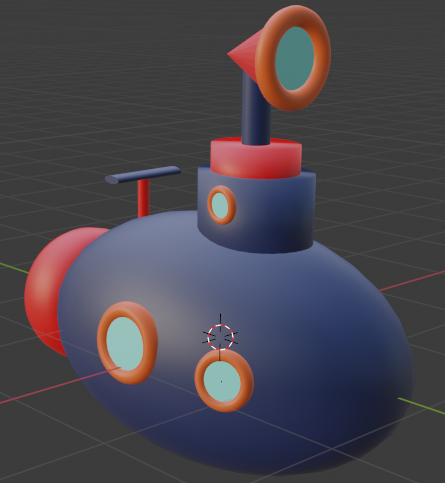

Zwei Dinge sind zu unserer Arbeit nötig: Unermüdliche Ausdauer und die Bereitschaft, etwas, in das man viel Zeit und Arbeit gesteckt hat, wieder wegzuwerfen. -Albert Eistein-
Meine Arbeiten:
Mein U-Boot, was ich in 3D-Modulation gemacht hab !Achtung Noob, keine Skills vorhanden!

Hier eine tolle Aufnahme von meinem Wasserglas: